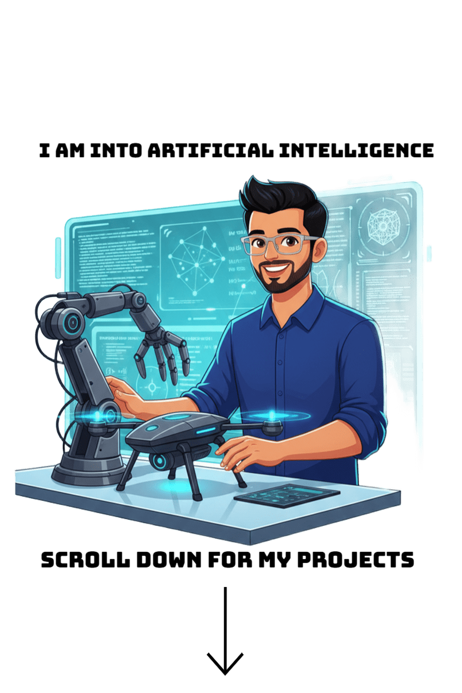

-PROJECTS

PROJECTS
I organize my work into advanced projects that highlight deeper technical work and normal projects that cover practical builds, experiments, and smaller applications.
-ADVANCED PROJECTS
Main portfolio work
These are the flagship projects that show my strongest problem-solving, architecture, and implementation skills.


 pitamabrjoga2007@gmail.com
pitamabrjoga2007@gmail.com